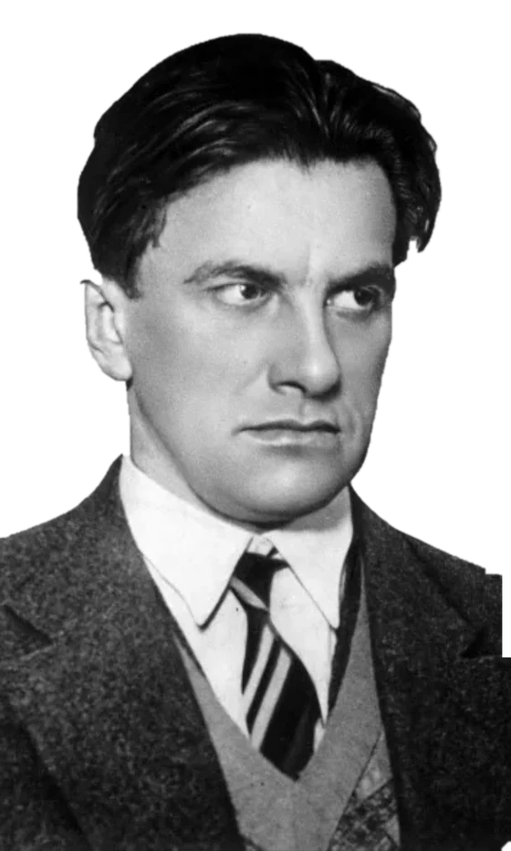
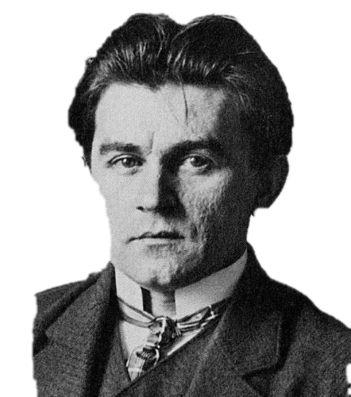

Вы любите авангард?
Вы узнаёте этот квадрат. Вы знаете, что он Малевича, что ему больше ста лет и что это авангард. Теперь попробуйте сказать, что он предлагает.
С Маяковским так же: имя знакомо, а помните ли вы, что он говорил Пушкину?
Мы возьмём двоих и посмотрим, что происходит с жестом разрыва, когда новый порядок решает, какое искусство ему нужно.
Начнём с жеста, который знают все.
1912. Пощёчина общественному вкусу
В конце 1912 года группа молодых поэтов выпускает сборник с манифестом. Он называется «Пощёчина общественному вкусу». В нём предлагается сбросить Пушкина, Достоевского и Толстого «с парохода современности». Среди подписавших — Владимир Маяковский.


Чтобы сбросить Пушкина, манифесту пришлось сначала назвать его по имени. Жест «против всех» ориентируется на то, что все уже считают ценным. Расстояние до большинства задано тем, где стоит большинство. Если бы большинство сдвинулось, сдвинулась бы и эта метка.


1924. Юбилейное
Двенадцать лет спустя Маяковский пишет стихотворение к 125-летию Пушкина. «Александр Сергеевич, разрешите представиться. Маяковский.» Пушкин здесь собеседник, а не груз на борту. «Я люблю вас, но живого, а не мумию.» Он спорит с тем, что сделали с поэтом: «навели хрестоматийный глянец». В 1912 году мишенью был классик как образец вкуса. В 1924-м мишень сместилась на глянец, которым классика покрыли. Что изменилось: Пушкин или то, против чего направлен жест?
1922. Бог не скинут
В Витебске Малевич издаёт брошюру «Бог не скинут. Искусство, церковь, фабрика». Название перекликается с «сбросить с парохода».
Исследователи цитируют из неё: «Бог – покой, покой – совершенство», «…то скинуть Бога нельзя». Беспредметность Малевич называет признаком искусства, к которому идёт.
Цитаты по статье А. Малей о трактате Малевича; сама брошюра в этом проекте пока не прочитана.
Чем отличается жест, который не сбрасывает, от жеста, который сбрасывает?
Что сделал сам и что решили другие
У каждого из двоих два списка. Сначала то, что автор делал сам. Потом то, что решали за него: заказчик, власть, редакторы, музей.

Маяковский
- 1912
Подписывает манифест «Пощёчина общественному вкусу».
- 1921
Выпускает поэму «150 000 000».
- 1924
«Юбилейное»: спорит с глянцем, которым покрыли Пушкина.
- 1921Ленин
Пишет о поэме «150 000 000»: «Как не стыдно голосовать за издание 150 000 000 Маяковского в 5000 экз.?»
- 1935Сталин
Лиля Брик жалуется, что поэта не издают. Сталин пишет Ежову: «Маяковский был и остаётся лучшим, талантливейшим поэтом нашей советской эпохи. Безразличие к его памяти и его произведениям — преступление.»
- 1935–1938Государство и школа
Площади и улицы получают его имя, выходят миллионные тиражи, стихи входят в школьные и вузовские программы. Музей открывается 15 октября 1938 года.
- 1950-еТеатры
Пьесы «Баня» и «Клоп» начинают широко ставить только теперь.
Какого Маяковского выбрали для учебника, а какой дожидался сцены до 1950-х?

Малевич
- 1915
Показывает «Чёрный квадрат» на выставке «0,10». Картину вешают в «красном углу».
- 1919
Приезжает в Витебск, где работает до лета 1922 года.
- 1922
Выходит «Бог не скинут».
- Декабрь 1919Заказчик
Первый крупный заказ ученикам Малевича, группе УНОВИС: оформить годовщину Комитета по борьбе с безработицей.
- 1920Город
Уновисы оформляют город к праздникам, в том числе к Первомаю.
- 7 ноября 1920Власти
Отказываются от проектов УНОВИСа по оформлению города.
- 1927Власти
Отзывают Малевича из Берлина, его картины остаются в Германии.
- 1929Третьяковская галерея
Ему устраивают ретроспективу. Взамен оставшихся в Германии работ он пишет «сорок новых полотен».
Заказчик принимал одно и отказывался от другого. По какому признаку?
Сегодня
Вернёмся к вопросу из начала. Вы любите авангард? Поставьте метку ещё раз и сравните её с первой.
Посмотрите на свою метку в начале и сейчас. Если они разные, что их сдвинуло: чьё-то решение, документ или ваши собственные доводы?
Следующий читатель
Он встречает обоих уже готовыми. Квадрат узнаётся, Маяковский входит в программу. Ему не нужно ничего сбрасывать, ему предлагают прочитать.
Что остаётся от жеста, когда место ему уже назначено?